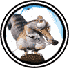

|

|
>> Содержание / Список кланов /
  IceAge IceAge
Деймео шел по следу паладина уже четыре часа. Кипящая месть и жажда светлой крови влекли вампира вперед по, казалось, безконечному следу. Вдруг впереди послышался звук. Обогнув нагромодение валунов, темный осторожно выглянул на открывшуюся взору снежную поляну. Паладин пытался высвободить застрявшую в трещине ногу и уже начал рычать от злости, понимая, что остановить шаг в снежной пустыне означает лишь одно - смерть... И на твоей могиле из чистейших снегов споет плачевную песнь лишь воздушная элементаль, навек укутав твое сердце ледяными покрывалами неустающего ветра, холоднее которого только человеческое безразличие...
В последний момент пал выдернул ступню и откатился вбок, парировал удар и подсек врага, выиграв тем самым мгновение, чтобы подняться на ноги. Начался танец безпощадного металла, жаждущего только крови. Один из ударов снес рог на шлеме темного и контузил воина. Он повалился на колени, зажав голову руками и огласил пустыню ужасным криком предчувствия смерти. Светлый топор, несший последний удар, бесшумно поднялся в воздух и вдруг отлетел вбок, овитый ударившей его цепью, сдерживавшей два металлических шара. Пал схватился за ушибленную кисть и резко обернулся. Чуть вдали стоял воин. Богатые золотистые меха почти полностью скрывали его доспехи, черная меховая оторочка украшала шлем. Из небольшой меховой сумы на поясе опасливо выглядывала длинная клыкастая мордочка существа, напоминавшего белку. Ветер играл иглами бурого меха, покрывавшего высокие с очень широкой подошвой сапоги воина, явно не металлические, как и остальной доспех. В его неподвижной ледяной стати чувстовался дух хозяина здешних мест.
- Я победил и я убью его! - выкрикнул пал.
Но Воин молчаливо высказал свое несогласие.
Тем временем вампир, придя в себя, вскочил и бросился на паладина. Пал и темный забыли о Воине ледяной пустыни и яростно борясь покатились по снегу. Вдруг темный, уже хрипя от удушья под стальными пальцами пала, нащупал подле себя булыжник и припечател им пала в висок. Поединок был окончен...
- Кто ты и как я могу отблагодарить тебя? - темный тяжело дышал.
- Мое имя - отвечал неспешно воин - давно затерялось в снегах этой пустыни. Мы откликаем друг друга мелодиями ледяного ветра и шепотом снега. Благодарность лучше оставь при себе - тебе до твоей цели еще целый день пути.
- Откуда ты знаешь мой путь?
- Мне ли не знать, что творится в моем доме - ответил воин, окинув взглядом безкрайние снега, и рассмеялся.
- Все же, позволь хотя бы отблагодарить твоего маленького оруженосца? - Деймео кивком указал на белку, которая уже высунула из сумы лапки, вовсю разглядывала незнакомца и принюхивалась к шедшему от него запаху. Белка мигом выбралась из свого укрытия и примчавшись к темному воину молниеносным движением выхватила орехи из его ладони и умчался обратно в свою сумку-убежище.
- Тебя проводят до города. Но ты не можешь взять ничего с побежденного.
Темный было оскалился возмущением, но трезвый разум вовремя посетил его - почему-то не хотелось испытывать остроту меча Воина ледяной пустыни...
Вдали из снега встали силуэты двух Ледяных Псов. У темного при виде живой легенды сердце замерло от ужаса. Он растерянно оглянулся на Воина, но тот лишь кивнул в ответ. Псы тоже обернулись и пошли, указывая тем самым путь.
Паладин проснулся... И ужасная боль раскроила ему череп. Он открыл глаза и увидел костер. Его тело было согрето меховым одеялом. Голову сжимала умело наложенная повязка.
Выход из пещеры ослеплял снежным блеском. Вокруг были только безкрайние льды и снега. Хотелось закричать от отчаяния, но вдали вдруг мигнули две пары черных глаз. Ледяные Псы медлено обернулись и пошли прочь, приглашая за собой.
Белка-оруженосец выследила еще одного незадачливого путника, от которого разило орехами, и помчалась все рассказывать Воину...
Официальный сайт клана: http://iceclan.lv/
|
 |
|